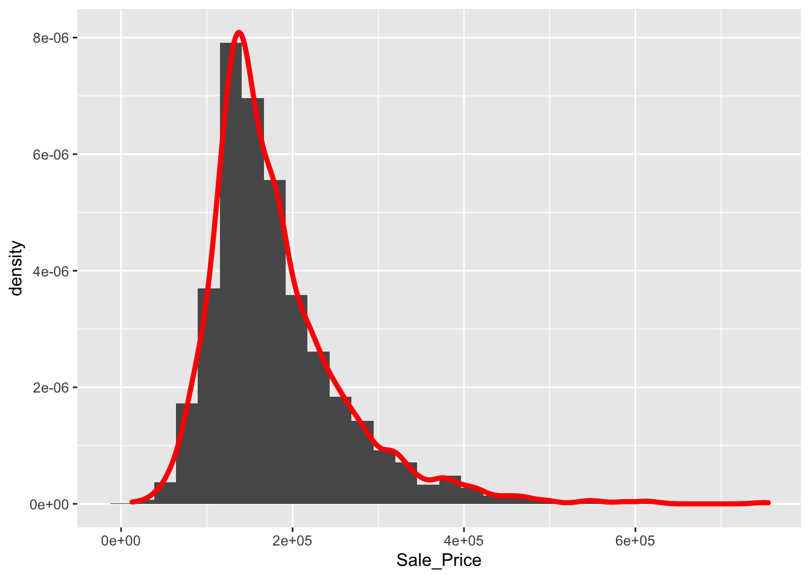

Chapter 5 Data visualisation with R
Let’s first introduce the data set that will be used throughout this chapter. The data set is a part of the Ames Housing Price data, containing 165 observations and 12 features including the sale date and price.
library(AmesHousing)
amesdata <- make_ames()
str(amesdata)## tibble [2,930 × 81] (S3: tbl_df/tbl/data.frame)
## $ MS_SubClass : Factor w/ 16 levels "One_Story_1946_and_Newer_All_Styles",..: 1 1 1 1 6 6 12 12 12 6 ...
## $ MS_Zoning : Factor w/ 7 levels "Floating_Village_Residential",..: 3 2 3 3 3 3 3 3 3 3 ...
## $ Lot_Frontage : num [1:2930] 141 80 81 93 74 78 41 43 39 60 ...
## $ Lot_Area : int [1:2930] 31770 11622 14267 11160 13830 9978 4920 5005 5389 7500 ...
## $ Street : Factor w/ 2 levels "Grvl","Pave": 2 2 2 2 2 2 2 2 2 2 ...
## $ Alley : Factor w/ 3 levels "Gravel","No_Alley_Access",..: 2 2 2 2 2 2 2 2 2 2 ...
## $ Lot_Shape : Factor w/ 4 levels "Regular","Slightly_Irregular",..: 2 1 2 1 2 2 1 2 2 1 ...
## $ Land_Contour : Factor w/ 4 levels "Bnk","HLS","Low",..: 4 4 4 4 4 4 4 2 4 4 ...
## $ Utilities : Factor w/ 3 levels "AllPub","NoSeWa",..: 1 1 1 1 1 1 1 1 1 1 ...
## $ Lot_Config : Factor w/ 5 levels "Corner","CulDSac",..: 1 5 1 1 5 5 5 5 5 5 ...
## $ Land_Slope : Factor w/ 3 levels "Gtl","Mod","Sev": 1 1 1 1 1 1 1 1 1 1 ...
## $ Neighborhood : Factor w/ 29 levels "North_Ames","College_Creek",..: 1 1 1 1 7 7 17 17 17 7 ...
## $ Condition_1 : Factor w/ 9 levels "Artery","Feedr",..: 3 2 3 3 3 3 3 3 3 3 ...
## $ Condition_2 : Factor w/ 8 levels "Artery","Feedr",..: 3 3 3 3 3 3 3 3 3 3 ...
## $ Bldg_Type : Factor w/ 5 levels "OneFam","TwoFmCon",..: 1 1 1 1 1 1 5 5 5 1 ...
## $ House_Style : Factor w/ 8 levels "One_and_Half_Fin",..: 3 3 3 3 8 8 3 3 3 8 ...
## $ Overall_Qual : Factor w/ 10 levels "Very_Poor","Poor",..: 6 5 6 7 5 6 8 8 8 7 ...
## $ Overall_Cond : Factor w/ 10 levels "Very_Poor","Poor",..: 5 6 6 5 5 6 5 5 5 5 ...
## $ Year_Built : int [1:2930] 1960 1961 1958 1968 1997 1998 2001 1992 1995 1999 ...
## $ Year_Remod_Add : int [1:2930] 1960 1961 1958 1968 1998 1998 2001 1992 1996 1999 ...
## $ Roof_Style : Factor w/ 6 levels "Flat","Gable",..: 4 2 4 4 2 2 2 2 2 2 ...
## $ Roof_Matl : Factor w/ 8 levels "ClyTile","CompShg",..: 2 2 2 2 2 2 2 2 2 2 ...
## $ Exterior_1st : Factor w/ 16 levels "AsbShng","AsphShn",..: 4 14 15 4 14 14 6 7 6 14 ...
## $ Exterior_2nd : Factor w/ 17 levels "AsbShng","AsphShn",..: 11 15 16 4 15 15 6 7 6 15 ...
## $ Mas_Vnr_Type : Factor w/ 5 levels "BrkCmn","BrkFace",..: 5 4 2 4 4 2 4 4 4 4 ...
## $ Mas_Vnr_Area : num [1:2930] 112 0 108 0 0 20 0 0 0 0 ...
## $ Exter_Qual : Factor w/ 4 levels "Excellent","Fair",..: 4 4 4 3 4 4 3 3 3 4 ...
## $ Exter_Cond : Factor w/ 5 levels "Excellent","Fair",..: 5 5 5 5 5 5 5 5 5 5 ...
## $ Foundation : Factor w/ 6 levels "BrkTil","CBlock",..: 2 2 2 2 3 3 3 3 3 3 ...
## $ Bsmt_Qual : Factor w/ 6 levels "Excellent","Fair",..: 6 6 6 6 3 6 3 3 3 6 ...
## $ Bsmt_Cond : Factor w/ 6 levels "Excellent","Fair",..: 3 6 6 6 6 6 6 6 6 6 ...
## $ Bsmt_Exposure : Factor w/ 5 levels "Av","Gd","Mn",..: 2 4 4 4 4 4 3 4 4 4 ...
## $ BsmtFin_Type_1 : Factor w/ 7 levels "ALQ","BLQ","GLQ",..: 2 6 1 1 3 3 3 1 3 7 ...
## $ BsmtFin_SF_1 : num [1:2930] 2 6 1 1 3 3 3 1 3 7 ...
## $ BsmtFin_Type_2 : Factor w/ 7 levels "ALQ","BLQ","GLQ",..: 7 4 7 7 7 7 7 7 7 7 ...
## $ BsmtFin_SF_2 : num [1:2930] 0 144 0 0 0 0 0 0 0 0 ...
## $ Bsmt_Unf_SF : num [1:2930] 441 270 406 1045 137 ...
## $ Total_Bsmt_SF : num [1:2930] 1080 882 1329 2110 928 ...
## $ Heating : Factor w/ 6 levels "Floor","GasA",..: 2 2 2 2 2 2 2 2 2 2 ...
## $ Heating_QC : Factor w/ 5 levels "Excellent","Fair",..: 2 5 5 1 3 1 1 1 1 3 ...
## $ Central_Air : Factor w/ 2 levels "N","Y": 2 2 2 2 2 2 2 2 2 2 ...
## $ Electrical : Factor w/ 6 levels "FuseA","FuseF",..: 5 5 5 5 5 5 5 5 5 5 ...
## $ First_Flr_SF : int [1:2930] 1656 896 1329 2110 928 926 1338 1280 1616 1028 ...
## $ Second_Flr_SF : int [1:2930] 0 0 0 0 701 678 0 0 0 776 ...
## $ Low_Qual_Fin_SF : int [1:2930] 0 0 0 0 0 0 0 0 0 0 ...
## $ Gr_Liv_Area : int [1:2930] 1656 896 1329 2110 1629 1604 1338 1280 1616 1804 ...
## $ Bsmt_Full_Bath : num [1:2930] 1 0 0 1 0 0 1 0 1 0 ...
## $ Bsmt_Half_Bath : num [1:2930] 0 0 0 0 0 0 0 0 0 0 ...
## $ Full_Bath : int [1:2930] 1 1 1 2 2 2 2 2 2 2 ...
## $ Half_Bath : int [1:2930] 0 0 1 1 1 1 0 0 0 1 ...
## $ Bedroom_AbvGr : int [1:2930] 3 2 3 3 3 3 2 2 2 3 ...
## $ Kitchen_AbvGr : int [1:2930] 1 1 1 1 1 1 1 1 1 1 ...
## $ Kitchen_Qual : Factor w/ 5 levels "Excellent","Fair",..: 5 5 3 1 5 3 3 3 3 3 ...
## $ TotRms_AbvGrd : int [1:2930] 7 5 6 8 6 7 6 5 5 7 ...
## $ Functional : Factor w/ 8 levels "Maj1","Maj2",..: 8 8 8 8 8 8 8 8 8 8 ...
## $ Fireplaces : int [1:2930] 2 0 0 2 1 1 0 0 1 1 ...
## $ Fireplace_Qu : Factor w/ 6 levels "Excellent","Fair",..: 3 4 4 6 6 3 4 4 6 6 ...
## $ Garage_Type : Factor w/ 7 levels "Attchd","Basment",..: 1 1 1 1 1 1 1 1 1 1 ...
## $ Garage_Finish : Factor w/ 4 levels "Fin","No_Garage",..: 1 4 4 1 1 1 1 3 3 1 ...
## $ Garage_Cars : num [1:2930] 2 1 1 2 2 2 2 2 2 2 ...
## $ Garage_Area : num [1:2930] 528 730 312 522 482 470 582 506 608 442 ...
## $ Garage_Qual : Factor w/ 6 levels "Excellent","Fair",..: 6 6 6 6 6 6 6 6 6 6 ...
## $ Garage_Cond : Factor w/ 6 levels "Excellent","Fair",..: 6 6 6 6 6 6 6 6 6 6 ...
## $ Paved_Drive : Factor w/ 3 levels "Dirt_Gravel",..: 2 3 3 3 3 3 3 3 3 3 ...
## $ Wood_Deck_SF : int [1:2930] 210 140 393 0 212 360 0 0 237 140 ...
## $ Open_Porch_SF : int [1:2930] 62 0 36 0 34 36 0 82 152 60 ...
## $ Enclosed_Porch : int [1:2930] 0 0 0 0 0 0 170 0 0 0 ...
## $ Three_season_porch: int [1:2930] 0 0 0 0 0 0 0 0 0 0 ...
## $ Screen_Porch : int [1:2930] 0 120 0 0 0 0 0 144 0 0 ...
## $ Pool_Area : int [1:2930] 0 0 0 0 0 0 0 0 0 0 ...
## $ Pool_QC : Factor w/ 5 levels "Excellent","Fair",..: 4 4 4 4 4 4 4 4 4 4 ...
## $ Fence : Factor w/ 5 levels "Good_Privacy",..: 5 3 5 5 3 5 5 5 5 5 ...
## $ Misc_Feature : Factor w/ 6 levels "Elev","Gar2",..: 3 3 2 3 3 3 3 3 3 3 ...
## $ Misc_Val : int [1:2930] 0 0 12500 0 0 0 0 0 0 0 ...
## $ Mo_Sold : int [1:2930] 5 6 6 4 3 6 4 1 3 6 ...
## $ Year_Sold : int [1:2930] 2010 2010 2010 2010 2010 2010 2010 2010 2010 2010 ...
## $ Sale_Type : Factor w/ 10 levels "COD","Con","ConLD",..: 10 10 10 10 10 10 10 10 10 10 ...
## $ Sale_Condition : Factor w/ 6 levels "Abnorml","AdjLand",..: 5 5 5 5 5 5 5 5 5 5 ...
## $ Sale_Price : int [1:2930] 215000 105000 172000 244000 189900 195500 213500 191500 236500 189000 ...
## $ Longitude : num [1:2930] -93.6 -93.6 -93.6 -93.6 -93.6 ...
## $ Latitude : num [1:2930] 42.1 42.1 42.1 42.1 42.1 ...
## - attr(*, "spec")=List of 2
## ..$ cols :List of 82
## .. ..$ Order : list()
## .. .. ..- attr(*, "class")= chr [1:2] "collector_integer" "collector"
## .. ..$ PID : list()
## .. .. ..- attr(*, "class")= chr [1:2] "collector_character" "collector"
## .. ..$ MS SubClass : list()
## .. .. ..- attr(*, "class")= chr [1:2] "collector_character" "collector"
## .. ..$ MS Zoning : list()
## .. .. ..- attr(*, "class")= chr [1:2] "collector_character" "collector"
## .. ..$ Lot Frontage : list()
## .. .. ..- attr(*, "class")= chr [1:2] "collector_integer" "collector"
## .. ..$ Lot Area : list()
## .. .. ..- attr(*, "class")= chr [1:2] "collector_integer" "collector"
## .. ..$ Street : list()
## .. .. ..- attr(*, "class")= chr [1:2] "collector_character" "collector"
## .. ..$ Alley : list()
## .. .. ..- attr(*, "class")= chr [1:2] "collector_character" "collector"
## .. ..$ Lot Shape : list()
## .. .. ..- attr(*, "class")= chr [1:2] "collector_character" "collector"
## .. ..$ Land Contour : list()
## .. .. ..- attr(*, "class")= chr [1:2] "collector_character" "collector"
## .. ..$ Utilities : list()
## .. .. ..- attr(*, "class")= chr [1:2] "collector_character" "collector"
## .. ..$ Lot Config : list()
## .. .. ..- attr(*, "class")= chr [1:2] "collector_character" "collector"
## .. ..$ Land Slope : list()
## .. .. ..- attr(*, "class")= chr [1:2] "collector_character" "collector"
## .. ..$ Neighborhood : list()
## .. .. ..- attr(*, "class")= chr [1:2] "collector_character" "collector"
## .. ..$ Condition 1 : list()
## .. .. ..- attr(*, "class")= chr [1:2] "collector_character" "collector"
## .. ..$ Condition 2 : list()
## .. .. ..- attr(*, "class")= chr [1:2] "collector_character" "collector"
## .. ..$ Bldg Type : list()
## .. .. ..- attr(*, "class")= chr [1:2] "collector_character" "collector"
## .. ..$ House Style : list()
## .. .. ..- attr(*, "class")= chr [1:2] "collector_character" "collector"
## .. ..$ Overall Qual : list()
## .. .. ..- attr(*, "class")= chr [1:2] "collector_integer" "collector"
## .. ..$ Overall Cond : list()
## .. .. ..- attr(*, "class")= chr [1:2] "collector_integer" "collector"
## .. ..$ Year Built : list()
## .. .. ..- attr(*, "class")= chr [1:2] "collector_integer" "collector"
## .. ..$ Year Remod/Add : list()
## .. .. ..- attr(*, "class")= chr [1:2] "collector_integer" "collector"
## .. ..$ Roof Style : list()
## .. .. ..- attr(*, "class")= chr [1:2] "collector_character" "collector"
## .. ..$ Roof Matl : list()
## .. .. ..- attr(*, "class")= chr [1:2] "collector_character" "collector"
## .. ..$ Exterior 1st : list()
## .. .. ..- attr(*, "class")= chr [1:2] "collector_character" "collector"
## .. ..$ Exterior 2nd : list()
## .. .. ..- attr(*, "class")= chr [1:2] "collector_character" "collector"
## .. ..$ Mas Vnr Type : list()
## .. .. ..- attr(*, "class")= chr [1:2] "collector_character" "collector"
## .. ..$ Mas Vnr Area : list()
## .. .. ..- attr(*, "class")= chr [1:2] "collector_integer" "collector"
## .. ..$ Exter Qual : list()
## .. .. ..- attr(*, "class")= chr [1:2] "collector_character" "collector"
## .. ..$ Exter Cond : list()
## .. .. ..- attr(*, "class")= chr [1:2] "collector_character" "collector"
## .. ..$ Foundation : list()
## .. .. ..- attr(*, "class")= chr [1:2] "collector_character" "collector"
## .. ..$ Bsmt Qual : list()
## .. .. ..- attr(*, "class")= chr [1:2] "collector_character" "collector"
## .. ..$ Bsmt Cond : list()
## .. .. ..- attr(*, "class")= chr [1:2] "collector_character" "collector"
## .. ..$ Bsmt Exposure : list()
## .. .. ..- attr(*, "class")= chr [1:2] "collector_character" "collector"
## .. ..$ BsmtFin Type 1 : list()
## .. .. ..- attr(*, "class")= chr [1:2] "collector_character" "collector"
## .. ..$ BsmtFin SF 1 : list()
## .. .. ..- attr(*, "class")= chr [1:2] "collector_integer" "collector"
## .. ..$ BsmtFin Type 2 : list()
## .. .. ..- attr(*, "class")= chr [1:2] "collector_character" "collector"
## .. ..$ BsmtFin SF 2 : list()
## .. .. ..- attr(*, "class")= chr [1:2] "collector_integer" "collector"
## .. ..$ Bsmt Unf SF : list()
## .. .. ..- attr(*, "class")= chr [1:2] "collector_integer" "collector"
## .. ..$ Total Bsmt SF : list()
## .. .. ..- attr(*, "class")= chr [1:2] "collector_integer" "collector"
## .. ..$ Heating : list()
## .. .. ..- attr(*, "class")= chr [1:2] "collector_character" "collector"
## .. ..$ Heating QC : list()
## .. .. ..- attr(*, "class")= chr [1:2] "collector_character" "collector"
## .. ..$ Central Air : list()
## .. .. ..- attr(*, "class")= chr [1:2] "collector_character" "collector"
## .. ..$ Electrical : list()
## .. .. ..- attr(*, "class")= chr [1:2] "collector_character" "collector"
## .. ..$ 1st Flr SF : list()
## .. .. ..- attr(*, "class")= chr [1:2] "collector_integer" "collector"
## .. ..$ 2nd Flr SF : list()
## .. .. ..- attr(*, "class")= chr [1:2] "collector_integer" "collector"
## .. ..$ Low Qual Fin SF: list()
## .. .. ..- attr(*, "class")= chr [1:2] "collector_integer" "collector"
## .. ..$ Gr Liv Area : list()
## .. .. ..- attr(*, "class")= chr [1:2] "collector_integer" "collector"
## .. ..$ Bsmt Full Bath : list()
## .. .. ..- attr(*, "class")= chr [1:2] "collector_integer" "collector"
## .. ..$ Bsmt Half Bath : list()
## .. .. ..- attr(*, "class")= chr [1:2] "collector_integer" "collector"
## .. ..$ Full Bath : list()
## .. .. ..- attr(*, "class")= chr [1:2] "collector_integer" "collector"
## .. ..$ Half Bath : list()
## .. .. ..- attr(*, "class")= chr [1:2] "collector_integer" "collector"
## .. ..$ Bedroom AbvGr : list()
## .. .. ..- attr(*, "class")= chr [1:2] "collector_integer" "collector"
## .. ..$ Kitchen AbvGr : list()
## .. .. ..- attr(*, "class")= chr [1:2] "collector_integer" "collector"
## .. ..$ Kitchen Qual : list()
## .. .. ..- attr(*, "class")= chr [1:2] "collector_character" "collector"
## .. ..$ TotRms AbvGrd : list()
## .. .. ..- attr(*, "class")= chr [1:2] "collector_integer" "collector"
## .. ..$ Functional : list()
## .. .. ..- attr(*, "class")= chr [1:2] "collector_character" "collector"
## .. ..$ Fireplaces : list()
## .. .. ..- attr(*, "class")= chr [1:2] "collector_integer" "collector"
## .. ..$ Fireplace Qu : list()
## .. .. ..- attr(*, "class")= chr [1:2] "collector_character" "collector"
## .. ..$ Garage Type : list()
## .. .. ..- attr(*, "class")= chr [1:2] "collector_character" "collector"
## .. ..$ Garage Yr Blt : list()
## .. .. ..- attr(*, "class")= chr [1:2] "collector_integer" "collector"
## .. ..$ Garage Finish : list()
## .. .. ..- attr(*, "class")= chr [1:2] "collector_character" "collector"
## .. ..$ Garage Cars : list()
## .. .. ..- attr(*, "class")= chr [1:2] "collector_integer" "collector"
## .. ..$ Garage Area : list()
## .. .. ..- attr(*, "class")= chr [1:2] "collector_integer" "collector"
## .. ..$ Garage Qual : list()
## .. .. ..- attr(*, "class")= chr [1:2] "collector_character" "collector"
## .. ..$ Garage Cond : list()
## .. .. ..- attr(*, "class")= chr [1:2] "collector_character" "collector"
## .. ..$ Paved Drive : list()
## .. .. ..- attr(*, "class")= chr [1:2] "collector_character" "collector"
## .. ..$ Wood Deck SF : list()
## .. .. ..- attr(*, "class")= chr [1:2] "collector_integer" "collector"
## .. ..$ Open Porch SF : list()
## .. .. ..- attr(*, "class")= chr [1:2] "collector_integer" "collector"
## .. ..$ Enclosed Porch : list()
## .. .. ..- attr(*, "class")= chr [1:2] "collector_integer" "collector"
## .. ..$ 3Ssn Porch : list()
## .. .. ..- attr(*, "class")= chr [1:2] "collector_integer" "collector"
## .. ..$ Screen Porch : list()
## .. .. ..- attr(*, "class")= chr [1:2] "collector_integer" "collector"
## .. ..$ Pool Area : list()
## .. .. ..- attr(*, "class")= chr [1:2] "collector_integer" "collector"
## .. ..$ Pool QC : list()
## .. .. ..- attr(*, "class")= chr [1:2] "collector_character" "collector"
## .. ..$ Fence : list()
## .. .. ..- attr(*, "class")= chr [1:2] "collector_character" "collector"
## .. ..$ Misc Feature : list()
## .. .. ..- attr(*, "class")= chr [1:2] "collector_character" "collector"
## .. ..$ Misc Val : list()
## .. .. ..- attr(*, "class")= chr [1:2] "collector_integer" "collector"
## .. ..$ Mo Sold : list()
## .. .. ..- attr(*, "class")= chr [1:2] "collector_integer" "collector"
## .. ..$ Yr Sold : list()
## .. .. ..- attr(*, "class")= chr [1:2] "collector_integer" "collector"
## .. ..$ Sale Type : list()
## .. .. ..- attr(*, "class")= chr [1:2] "collector_character" "collector"
## .. ..$ Sale Condition : list()
## .. .. ..- attr(*, "class")= chr [1:2] "collector_character" "collector"
## .. ..$ SalePrice : list()
## .. .. ..- attr(*, "class")= chr [1:2] "collector_integer" "collector"
## ..$ default: list()
## .. ..- attr(*, "class")= chr [1:2] "collector_guess" "collector"
## ..- attr(*, "class")= chr "col_spec"5.1 Scatterplots
Are the bigger houses more expensive? In base R, we can use the plot() function to generate this scatterplot with the first argument being the variable on the x-axis and the second argument being the variable on the y-axis.
It’s OK but not nice. The plot() function provides a rich capability of customization by setting the graphical parameters.
plot(amesdata$Gr_Liv_Area, amesdata$Sale_Price,
col = "red",
xlab = "Living Area",
ylab = "Sale Price",
main = "Sale Price vs. Living Area",
pch = 1, #Shape of the points
cex = 1) #Size of text and symbols
Although the plot() function gets the work done, the ggplot2 package provides a superior user experience. It’s a member of the tidyverse package, you don’t need to install it separately if tidyverse was already installed.
library(ggplot2)
ggplot(data = amesdata) +
geom_point(mapping = aes(x = Gr_Liv_Area, y = Sale_Price))In a nutshell, ggplot2 implements the grammar of graphics, a coherent system for describing and building graphs. We always start with the function ggplot() with a data frame or tibble as its argument. To generate a scatterplot, you can add a layer using the + operator followed by the geom_point() function, which is one of the many available geoms in ggplot. Inside geom_point(), you need to set the value of the mapping argument. The mapping argument takes a functional form as mapping = aes(), where the aes is short for aesthetics. For example, you can use aes() to tell ggplot to use which variable on the x-axis, which variable on the y-axis.
ggplot(data = amesdata) +
geom_point(mapping = aes(Gr_Liv_Area, y = Sale_Price),
color = "red",
shape = 2,
size = 0.5,
alpha = 0.3) #transparency level of the pointsSuppose we want to use different colors according to the different House_Style in the scatterplot.
ggplot(data = amesdata) +
geom_point(mapping = aes(x = Gr_Liv_Area,
y = Sale_Price,
color = House_Style),
size = 1)In addition to color, you can also map a discrete variable to the size aesthetic.
ggplot(data = amesdata) +
geom_point(mapping = aes(x = Gr_Liv_Area,
y = Sale_Price,
size = House_Style),
alpha = 0.5)
Or
ggplot(data = amesdata) +
geom_point(mapping = aes(x = Gr_Liv_Area,
y = Sale_Price,
shape = Exter_Qual),
alpha = 0.5,
size = 2)
and multiple mapping:
ggplot(data = amesdata) +
geom_point(mapping = aes(x = Gr_Liv_Area,
y = Sale_Price,
shape = Exter_Qual,
color = Central_Air),
alpha = 0.5,
size = 2)5.2 Smootlines
ggplot(data = amesdata) +
geom_smooth(mapping = aes(x = Gr_Liv_Area,
y = Sale_Price),
size = 1.5)## `geom_smooth()` using method = 'gam' and formula 'y ~ s(x, bs = "cs")'ggplot(data = amesdata) +
geom_smooth(mapping = aes(x = Gr_Liv_Area,
y = Sale_Price),
size = 1.5,
method = "lm")## `geom_smooth()` using formula 'y ~ x'And
ggplot(data = amesdata) +
geom_point(mapping = aes(x = Gr_Liv_Area,
y = Sale_Price)) +
geom_smooth(mapping = aes(x = Gr_Liv_Area,
y = Sale_Price)) ## `geom_smooth()` using method = 'gam' and formula 'y ~ s(x, bs = "cs")'# Or with global mapping
ggplot(data = amesdata,
mapping = aes(x = Gr_Liv_Area,
y = Sale_Price,
color = Central_Air)) +
geom_point() +
geom_smooth() ## `geom_smooth()` using method = 'gam' and formula 'y ~ s(x, bs = "cs")'5.3 Histograms & Density
How do we visualize continuous variables? One popular plot is called histograms.
hist(amesdata$Sale_Price)
And density with ggplot
ggplot(data = amesdata, aes(x = Sale_Price)) +
geom_histogram(aes(y = ..density..)) +
geom_density(color = "red",
size = 1.5)## `stat_bin()` using `bins = 30`. Pick better value with `binwidth`.5.4 Multiple plots
fc <- ggplot(data = amesdata, aes(x = Sale_Price)) +
geom_histogram(aes(y = ..density..)) +
geom_density(color = "red",
size = 1.5)
fc + facet_wrap("Street")## `stat_bin()` using `bins = 30`. Pick better value with `binwidth`. ## Lables etc.
## Lables etc.
fc +
xlab("Sale Price") +
ylab("Density") +
ggtitle("Price vs. Area") +
theme(axis.text = element_text(size = 25, color = "red")) +
theme(plot.title = element_text(size = 24,
color = "magenta",
face = "bold",
hjust = 0.5)) ## `stat_bin()` using `bins = 30`. Pick better value with `binwidth`.
5.5 Add lines
Let’s create some series (compounding series) of $1000:
t <- seq(0, 10, 1/4)
A1 <- 1000*(1+0.05)^t
A2 <- 1000*(1+0.03)^t
A3 <- 1000*(1+0.07)^t
A4 <- 1000*(1+0.1)^tplot(t, A1)
Here is a simple but beautiful plot … So you may not want to use ggplot all the time:
plot(t, A1, ylim = c(1000,2000),
type = "l", xlab = "Time (in years)",
ylab = "Accumulated Value (in $)",
main = "Accumulated Value of $1000 Investment", col = "black")
lines(t, A2, type = "l", col = "blue", lty = 2, lwd = 2)
lines(t, A3, type = "l", col = "red", lty = 3, lwd = 3)
legend("bottomright",
legend = c("3% Interest", "5% Interest", "7% Interest"),
col = c("blue", "black", "red"),
lty = c(2, 1, 3), bty = "o", cex = 0.75)
Or we can put them next to each other:
par(mfrow=c(2,2), oma = c(0,0,2,0)) # puts 4 plots in one window (2x2)
plot(t, A1, type = "l", xlab = "Time (in years)",
ylab = "AV - $", ylim = c(1000, 2500),
main = "(i = 0.05)")
plot(t, A2, type = "l", xlab = "Time (in years)",
ylab = "AV - $", ylim = c(1000, 2500),
main = "(i = 0.03)")
plot(t, A3, type = "l", xlab = "Time (in years)",
ylab = "AV - $", ylim = c(1000, 2500),
main = "(i = 0.07)")
plot(t, A4, type = "l", xlab = "Time (in years)",
ylab = "AV - $", ylim = c(1000, 2500),
main = "(i = 0.1)")
mtext("Accumulated Value of $1000 Investment",
outer=TRUE, cex = 1.5, col="olivedrab")5.6 Pairwise relationship
R package corrplot provides a visual exploratory tool on correlation matrix that supports automatic variable reordering to help detect hidden patterns among variables. See more details here
library(corrplot)## corrplot 0.92 loadedM = cor(mtcars)
corrplot(M, method = 'number') # colorful number
corrplot(M)
corrplot(M, order = 'AOE')
corrplot.mixed(M, order = 'AOE')